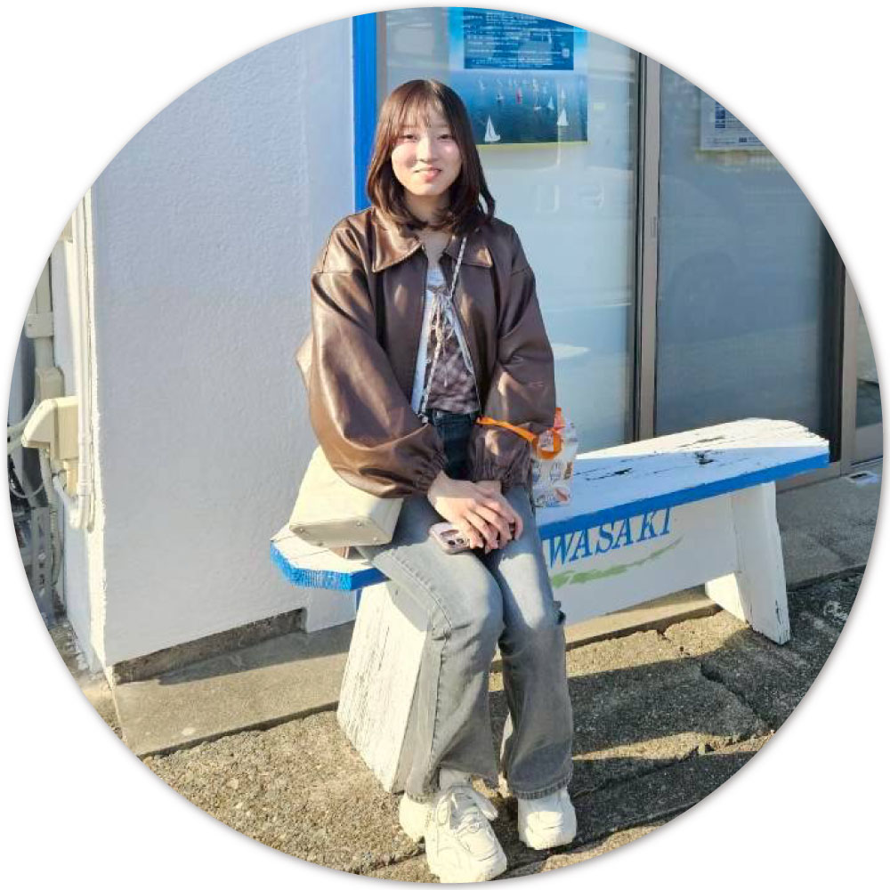
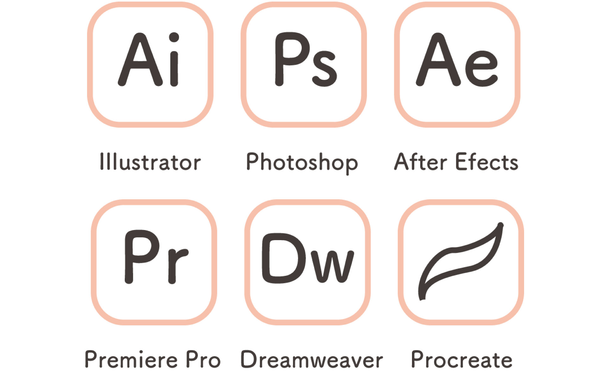

ABOUT
私について
木村 優乃 / Kimura Yuno
サンテクノカレッジ マルチメディア科2年
2006年生まれ 20歳
身体を動かすこと、読書、旅行が好きです。
資格
文部科学省後援 色彩検定3級
Microsoft Office Specialist Word 365 Associate
普通自動車第一種運転免許

使用可能ソフト
Illustrator・Photoshop・CLIP STUDIOは問題なく使用できます。
映像編集については、Premire ProとAfter Efectsが使用できます。
Webデザインについては、HTML・CSSを扱えます。現在JavaScriptを勉強中です。
また、InDesignについても勉強中です。
